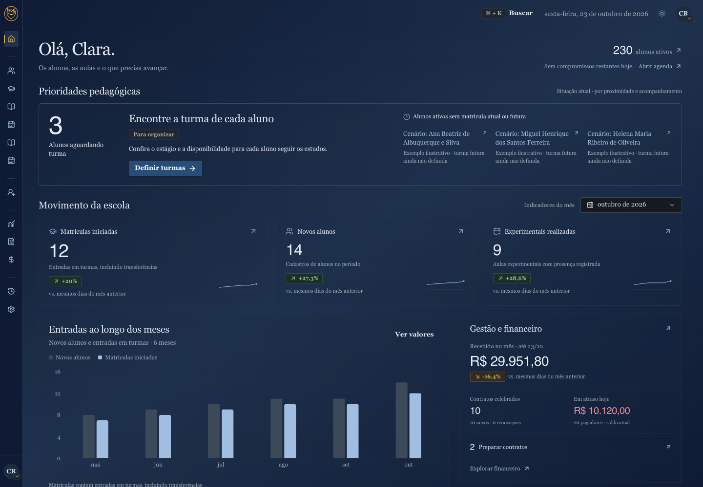

Ir para a apresentação
Lazuli
/
Página inicial
Revisão dos estados · 23 out. 2026
Roteiro essencial
13
Todos os estados
45
Índice
Imprimir / PDF
Tamanho original
Fechar ×

Esta apresentação usa JavaScript local para navegar pelos estados. As capturas também estão disponíveis na pasta screens.